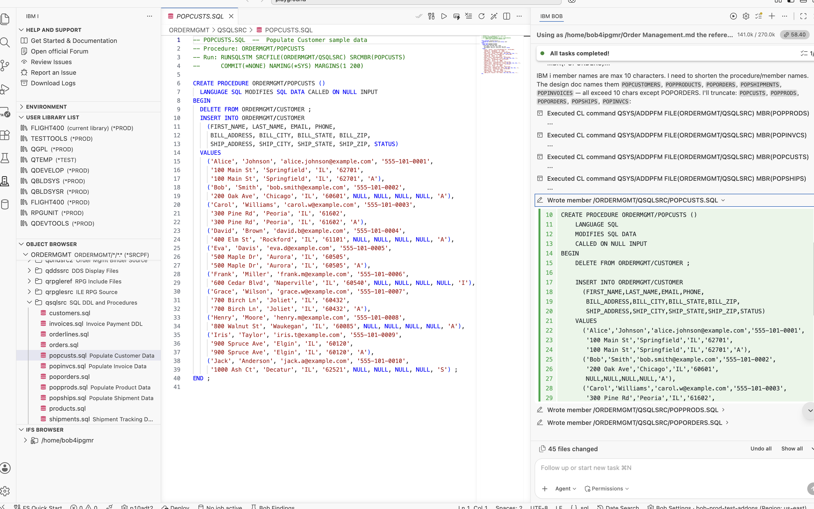
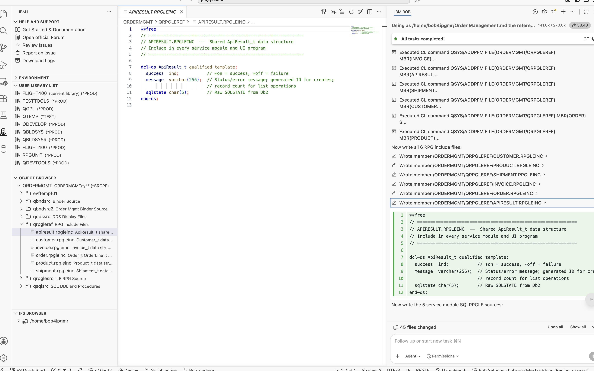
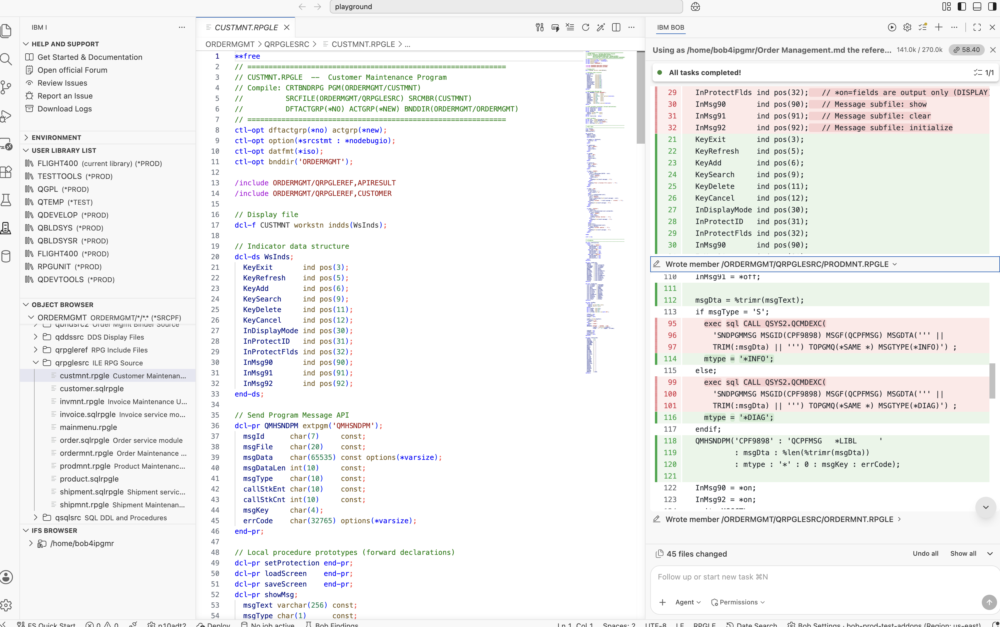

IBM Bob · Premium Package for i (PPi) · IBM i Developer Mode
I wanted to find out how far IBM i Developer Mode, powered by the Premium Package for i (PPi), could go when given a complete application design. Instead of asking it to generate a single program or service procedure, I challenged it to build an entire Order Management System in IBM i from a detailed design document using just one prompt.
The design document defined every aspect of the application, including the Db2 table schema with referential integrity, ILE service program architecture, procedure interfaces, DDS display file record formats, binding directory configuration, compilation sequence, and the shared ApiResult_t data structure used across the service layer. It represented the kind of detailed technical specification that IBM i development teams use to build production applications.
The objective was straightforward: determine whether IBM Bob, using IBM i Developer Mode and the IBM i capabilities provided by the Premium Package for i (PPi), could transform that design into a complete, well-structured application. I wanted to see whether it could generate the correct architecture, organize the project, respect build dependencies, and produce source members that were ready to compile with minimal manual effort.

Before getting into the build, it's worth explaining what made this possible. The capabilities demonstrated throughout this blog are powered by the Premium Package for i (PPi), which extends IBM i Developer Mode with IBM i-specific capabilities, workflows, skills, and tools.
Premium Package for i (PPi) is the add-on that gives IBM Bob deep IBM i capabilities. It includes IBM i Developer Mode, IBM i Database Mode, IBM i-specific workflows, IBM i Skills, and direct access to your IBM i system through Code for IBM i. Together, these capabilities enable IBM Bob to work directly with IBM i resources while following IBM i development practices.
With IBM i Developer Mode enabled, IBM Bob can:
QSYS2 and SYSIBM/SYSDUMMY1These capabilities allow IBM i Developer Mode to do more than generate source code. It can work directly with your IBM i environment, compile objects, analyze the results, identify issues, and continue building the application within the same development session.
With the design document already available on the IFS at /home/bob4ipgmr/Order Management.md, everything IBM Bob needed was in one place. The document defined the complete three-tier application architecture, including the Db2 table definitions, procedure interfaces, DDS display file record formats, binding directory structure, and the required compilation sequence. You can read the full specification here: IBM i Order Management System — Application Design Document →
I gave IBM Bob a single prompt:

That was the entire instruction. I didn't break the work into smaller tasks or guide IBM Bob through the implementation step by step. I expected it to ask for clarification or begin with a small part of the application — perhaps generating the database tables first and waiting for further instructions. Instead, it took the design document, understood the complete scope of the application, and started building it end to end.
Before generating any source, IBM Bob used the IFS access capabilities available through the Premium Package for i (PPi) to read the design document. Rather than immediately creating source members, it first analyzed the application and presented a structured implementation plan.
Here is the response IBM Bob generated before writing a single line of source:

What impressed me wasn't just the implementation plan — it was the order of execution. Without any additional guidance, IBM Bob correctly identified the dependency chain defined in the design document. It understood that modules needed to be created before service programs, service programs before the binding directory, and the binding directory before the interactive programs. That entire build sequence came directly from the design document.
As per the design document, the full build covered:
*MODULE with ctl-opt nomain — one per business domainQBNDSRC2 source file (record length 92, not 256)*SRVPGM objects bound into the ORDERMGMT/ORDERMGMT binding directoryCRTDSPFbnddir('ORDERMGMT')One of the strengths of the Premium Package for i (PPi) is its collection of IBM i Skills. These are IBM i-specific knowledge modules that IBM Bob automatically selects based on the task it is performing. Rather than relying on generic code generation, IBM Bob applies the most appropriate IBM i Skill for each stage of the application.
For this application, IBM Bob used the following IBM i Skills:
| Skill | Used For |
|---|---|
| SQL / Db2 for i Skill | SQL DDL with identity columns, FK constraints, ON DELETE CASCADE, RUNSQLSTM COMMIT(*NONE) NAMING(*SYS) |
| ILE RPG Free Format Skill | Fully free **free SQLRPGLE modules with ctl-opt nomain, correct QMHSNDPM prototype, forward dcl-pr patterns |
| DDS Display Files Skill | Message subfile pattern (MSGSFL/MSGCTL), OVERLAY on maintenance screens, INDARA |

The first step was building the database layer. Using IBM i Developer Mode, IBM Bob generated all the SQL DDL source members in ORDERMGMT/QSQLSRC. Each table was created using CREATE TABLE and followed the design document exactly, including identity columns for primary keys, check constraints, and referential integrity. The design called for six tables covering every business domain of the application.
| Source Member | Creates Table | Key Design Points |
|---|---|---|
QSQLSRC/CUSTOMERS | ORDERMGMT/CUSTOMER | Identity PK, unique EMAIL, STATUS check (A/I/S), audit timestamps |
QSQLSRC/PRODUCTS | ORDERMGMT/PRODUCT | Identity PK, PRICE/COST decimals, STOCK_QTY, STATUS check (A/D/O) |
QSQLSRC/ORDERS | ORDERMGMT/ORDER | FK to CUSTOMER, STATUS check (P/C/S/X/H), SUBTOTAL/TAX/SHIP/TOTAL amounts |
QSQLSRC/ORDERLINES | ORDERMGMT/ORDERLINE | FK to ORDER (ON DELETE CASCADE), FK to PRODUCT (ON DELETE RESTRICT) |
QSQLSRC/SHIPMENTS | ORDERMGMT/SHIPMENT | FK to ORDER, CARRIER, TRACKING_NO, STATUS check (P/I/T/D/R) |
QSQLSRC/INVOICES | ORDERMGMT/INVOICE | FK to ORDER, AMOUNT_DUE/PAID, STATUS check (D/P/O/V/W) |
The CUSTOMER table was the first thing I examined. I wanted to verify whether IBM Bob would generate the identity column using the recommended IBM i pattern. It did exactly that, using GENERATED ALWAYS AS IDENTITY, including the START WITH 1 INCREMENT BY 1 clause that is sometimes missing in automatically generated SQL.

The ORDERLINE table also implemented the referential integrity rules defined in the design document. IBM Bob generated the foreign key constraints with ON DELETE CASCADE, ensuring that when an order is deleted, all associated order line records are automatically removed. This maintains data integrity without requiring additional application logic to handle the related line item records.

Once the DDL was generated, IBM Bob compiled each source member using RUNSQLSTM COMMIT(*NONE) NAMING(*SYS) MARGINS(200). Using the IBM i capabilities provided by the Premium Package for i (PPi), it verified the compilation results before proceeding to the next stage of the application build.
CUSTOMER · PRODUCT · ORDER · ORDERLINE · SHIPMENT · INVOICE — all created in ORDERMGMT with constraints intact.
After creating the database tables, IBM Bob generated five SQL stored procedures in ORDERMGMT/QSQLSRC to populate the application with realistic sample data for development and testing. Having representative data available from the beginning made it much easier to validate the service procedures and interactive programs as the application came together.
| Source Member | Procedure | Records Inserted |
|---|---|---|
POPCUSTS | ORDERMGMT.POPCUSTS() | 10 customers across multiple states |
POPPRODS | ORDERMGMT.POPPRODS() | 20 products with stock quantities and pricing |
POPORDERS | ORDERMGMT.POPORDERS() | 15 orders with line items and calculated totals |
POPSHIPS | ORDERMGMT.POPSHIPS() | 12 shipments linked to orders |
POPINVCS | ORDERMGMT.POPINVCS() | 12 invoices with payment status |
Each stored procedure begins with a DELETE FROM statement before inserting new data, making it safe to run repeatedly during development without creating duplicate records. IBM Bob also generated the procedures in the correct dependency order, loading customers and products first, followed by orders, and finally shipments and invoices to satisfy the foreign key relationships.

This is where the application's core business logic comes together. Using IBM i Developer Mode, IBM Bob generated five fully free-format SQLRPGLE modules in ORDERMGMT/QRPGLESRC. Each module was compiled as a *MODULE using CRTSQLRPGI OBJTYPE(*MODULE), following the recommended IBM i pattern where modules contain the procedure implementations and service programs expose those procedures through bound exports.
Every module uses ctl-opt nomain, making it a library of reusable procedures rather than a runnable program. Every procedure returns the shared ApiResult_t data structure defined in QRPGLEREF/APIRESULT.

Using a shared result structure across more than 30 service procedures was a key design decision documented in the specification, and IBM Bob implemented it consistently throughout the application. Every caller checks result.success and reads result.message, keeping the UI layer clean and avoiding scattered SQLSTATE handling across multiple programs.
QRPGLESRC/CUSTOMER
The CUSTOMER module exports six procedures: createCustomer, getCustomer,
updateCustomer, deleteCustomer, listCustomers, and
searchCustomers. Each procedure returns the shared ApiResult_t result structure, with createCustomer returning the generated identity value of the new record in the message field.

QRPGLESRC/ORDER
The ORDER module contains the most complex business logic in the application. The addOrderLine procedure inserts a new order line, updates product inventory, and recalculates the order totals within the same procedure. What impressed me was that IBM Bob generated this complete workflow directly from the design document. I didn't have to describe these steps individually — the required business logic was already defined in the specification, and IBM Bob implemented it accordingly.

CUSTOMER · PRODUCT · ORDER · SHIPMENT · INVOICE — all compiled as *MODULE using CRTSQLRPGI OBJTYPE(*MODULE).
After generating the SQLRPGLE modules, IBM Bob created the service programs by linking each module into a *SRVPGM using binder source stored in ORDERMGMT/QBNDSRC2. As defined in the design document, each binder source includes a signature string that identifies the exported interface. As long as new exports are appended without removing or reordering existing ones, applications already bound to the service program continue to work without requiring recompilation.

Each service program was then created using the same CRTSRVPGM pattern:
CRTSRVPGM SRVPGM(ORDERMGMT/CUSTOMER)
MODULE(ORDERMGMT/CUSTOMER)
EXPORT(*SRCFILE)
SRCFILE(ORDERMGMT/QBNDSRC2)
SRCMBR(CUSTOMER)
ACTGRP(*CALLER)
AUT(*EXCLUDE)
After all five service programs were created, IBM Bob built the binding directory and added every service program as an entry:
CRTBNDDIR BNDDIR(ORDERMGMT/ORDERMGMT) AUT(*EXCLUDE) ADDBNDDIRE BNDDIR(ORDERMGMT/ORDERMGMT) OBJ((ORDERMGMT/CUSTOMER *SRVPGM)) ADDBNDDIRE BNDDIR(ORDERMGMT/ORDERMGMT) OBJ((ORDERMGMT/PRODUCT *SRVPGM)) ADDBNDDIRE BNDDIR(ORDERMGMT/ORDERMGMT) OBJ((ORDERMGMT/ORDER *SRVPGM)) ADDBNDDIRE BNDDIR(ORDERMGMT/ORDERMGMT) OBJ((ORDERMGMT/SHIPMENT *SRVPGM)) ADDBNDDIRE BNDDIR(ORDERMGMT/ORDERMGMT) OBJ((ORDERMGMT/INVOICE *SRVPGM))
Any UI program that specifies bnddir('ORDERMGMT') in its ctl-opt
automatically resolves calls to any of the 30+ exported procedures across all five service
programs — no library qualifier needed at call time.
Next, IBM Bob generated all DDS display files in ORDERMGMT/QDDSSRC using the DDS Display Files Skill, one of the IBM i Skills available through the Premium Package for i (PPi). Each display file was compiled using CRTDSPF.
QDDSSRC/MAINMENU
The main menu uses two record formats: MENUSCREEN (the navigation screen) and
MSGBAR (an OVERLAY format on line 24 for status and error messages).
The split is deliberate — writing MSGBAR separately means the message line can be
updated without rewriting the entire screen.

The five maintenance display files (CUSTMNT, PRODMNT,
ORDERMNT, SHIPMNT, INVMNT) all use the standard IBM i
message subfile pattern — MSGSFL + MSGCTL on line 24. IBM Bob used the
DDS Display Files Skill to get the indicator wiring right: indicator 90 for display,
indicator 91 for clear, indicator 92 for initialise.

MAINMENU · CUSTMNT · PRODMNT · ORDERMNT · SHIPMNT · INVMNT — all compiled with CRTDSPF.
This was the most challenging part of the application build. IBM Bob generated all the maintenance programs in ORDERMGMT/QRPGLESRC, and this is where the collaboration between me and IBM Bob became particularly interesting. Not every program compiled successfully on the first attempt. What stood out was how IBM i Developer Mode, using the IBM i capabilities provided by the Premium Package for i (PPi), analyzed each compilation failure, identified the root cause, and applied the required fix without introducing unrelated changes.
QRPGLESRC/MAINMENU
The MAINMENU program acts as the application's navigation hub. It uses a dynamic EXTPGM prototype, a standard IBM i technique for late-bound program calls. The programToCall variable is assigned at runtime, allowing a single prototype to invoke all five maintenance programs. I hadn't seen this pattern generated automatically before. It eliminates the need for multiple hard-coded dcl-pr definitions and makes the menu easier to extend — adding another maintenance program simply requires another menu option.

CUSTMNT, PRODMNT, SHIPMNT, INVMNTAll maintenance programs follow the same three-mode workflow: SEARCH — locate a record by its identifier; DISPLAY — display and update the selected record; ADD — create a new record. All database operations are performed through the service layer. The UI programs contain no embedded SQL, keeping the presentation layer separate from the business logic defined in the service programs.
The following example shows the overall structure of the CUSTMNT program:

No IBM i application of this size compiles perfectly on the first attempt, and I wasn't expecting this one to either. What mattered was how IBM Bob responded when compilation errors occurred. Instead of regenerating entire programs, IBM i Developer Mode, using the IBM i capabilities provided by the Premium Package for i (PPi), analyzed the compiler output, identified the root cause of each failure, and applied only the changes required to resolve it. That approach preserved the existing source while making each fix precise and easy to review.
The following sections walk through each of the six compilation issues encountered during the build.
CRTDSPF for MAINMENU failed with CPD5235 — Record name same as file name.
The original DDS named the primary record format MAINMENU — the same as the file.
This is a DDS rule: a record format name cannot match its containing file name. IBM Bob read
the compiler message, identified the violation, and made exactly two changes: renamed the
record format from MAINMENU to MENUSCREEN in the DDS source,
and updated the RPG program from exfmt MAINMENU to exfmt MENUSCREEN.
Nothing else changed.
- A R MAINMENU A 1 28'ORDER MANAGEMENT SYSTEM' ... - exfmt MAINMENU;
+ A R MENUSCREEN A 1 28'ORDER MANAGEMENT SYSTEM' ... + exfmt MENUSCREEN;
CRTSRVPGM failed — binder source could not be read.
IBM Bob had initially created QBNDSRC with record length 256. The
CRTSRVPGM command requires binder source with a record length of 240 or less —
the standard is 92 characters. IBM Bob caught this from the error output, created a new source
file QBNDSRC2 with record length 92, moved all five binder source members into it,
and recompiled all five service programs using the new file.
Binder source EXPORT SYMBOL(createCustomer) without quotes causes the ILE linker
to uppercase the symbol name to CREATECUSTOMER. The actual exported procedure
is createCustomer in mixed case because RPG uses extproc(*dclcase)
by convention. The symbol mismatch meant the binding appeared to succeed but failed silently
at call time.
- EXPORT SYMBOL(createCustomer) - EXPORT SYMBOL(getCustomer) - EXPORT SYMBOL(updateCustomer)
+ EXPORT SYMBOL('createCustomer') + EXPORT SYMBOL('getCustomer') + EXPORT SYMBOL('updateCustomer')
exec sql CALL Inside a Proc Breaks RPGPPOPT(*LVL2)RNF0256 — Specification found between procedures — 84+ errors per program.
The original showMsg procedure used exec sql CALL QSYS2.QCMDEXC(...)
to send messages. With RPGPPOPT(*LVL2), the SQL precompiler injects fixed-format
D-spec data structure blocks at every exec sql statement. When that injection
happens inside a dcl-proc, the injected DS declarations land between
procedures — which the RPG compiler treats as a fatal structure error.
IBM Bob replaced exec sql CALL QSYS2.QCMDEXC(...) in all five programs with a
direct call to the QMHSNDPM API. No SQL inside showMsg — no
precompiler injection — no problem.
dcl-proc showMsg; - exec sql CALL QSYS2.QCMDEXC( - 'SNDPGMMSG MSG(''' + msgText + ''')' - : 32702); end-proc;
dcl-proc showMsg; + QMHSNDPM('CPF9898' : 'QCPFMSG *LIBL ' + : msgDta : %len(%trimr(msgDta)) + : mtype : '*' : 0 : msgKey : errCode); end-proc;
RNF0256 even after fixing showMsg.
In fully free-format RPG, all dcl-proc blocks must come after the
main-body executable code. The original structure placed the dou exitFlag;
loop and variable declarations after the last dcl-proc. Code after
a dcl-proc is treated as being between procedures — which is invalid.
IBM Bob restructured every program into the correct four-part layout: global declarations first, followed by forward prototypes for all local procedures, then the main executable body, and finally the procedure implementations at the end of the source member.

dcl-pr prototype must be declared before the main body so the compiler knows the procedure's interface at the point of the call. IBM Bob added the required forward prototypes for every local procedure across all five maintenance programs without any additional guidance.
ORDERMNT had two additional problems even after applying the fixes above: (a) DECLARE lineCur CURSOR was inside the loadLines procedure, breaking SQL precompiler variable resolution; (b) multiple assignments on one line like LN1LID = lc_lineId; LN1PID = lc_prodId; caused RNF5508 — End of free-format statement is not blank.
ORDERMNT is the only UI program with embedded SQL — it reads ORDERLINE
rows with a cursor and must be compiled as CRTSQLRPGI OBJTYPE(*PGM). The cursor
declaration was inside a procedure, which meant the SQL precompiler could not resolve the host
variables at compile time.
IBM Bob applied three targeted fixes:
DECLARE lineCur CURSOR to module level — outside all procedures — so the precompiler sees the host variablesOPEN/FETCH/CLOSE cursor loop directly in the main body, not inside a dcl-procdcl-proc loadLines; - exec sql DECLARE lineCur CURSOR FOR - SELECT LINE_ID, PRODUCT_ID ... - WHERE ORDER_ID = :ord.orderId ; - LN1LID = lc_lineId; LN1PID = lc_prodId; end-proc;
// Module level — precompiler sees host variables +exec sql DECLARE lineCur CURSOR FOR + SELECT LINE_ID, PRODUCT_ID, QUANTITY, + UNIT_PRICE, LINE_TOTAL + FROM ORDERMGMT/ORDERLINE + WHERE ORDER_ID = :ord.orderId ; + LN1LID = lc_lineId; + LN1PID = lc_prodId;
After resolving all six issues, IBM Bob performed a final build of the entire application using IBM i Developer Mode with the IBM i capabilities provided by the Premium Package for i (PPi). The build completed successfully, with all 32 objects compiling at severity 00.
| Object | Type | Library | Compile Command | Result |
|---|---|---|---|---|
CUSTOMER | *FILE (PF) | ORDERMGMT | RUNSQLSTM | ✅ 00 |
PRODUCT | *FILE (PF) | ORDERMGMT | RUNSQLSTM | ✅ 00 |
ORDER | *FILE (PF) | ORDERMGMT | RUNSQLSTM | ✅ 00 |
ORDERLINE | *FILE (PF) | ORDERMGMT | RUNSQLSTM | ✅ 00 |
SHIPMENT | *FILE (PF) | ORDERMGMT | RUNSQLSTM | ✅ 00 |
INVOICE | *FILE (PF) | ORDERMGMT | RUNSQLSTM | ✅ 00 |
CUSTOMER | *MODULE | ORDERMGMT | CRTSQLRPGI OBJTYPE(*MODULE) | ✅ 00 |
PRODUCT | *MODULE | ORDERMGMT | CRTSQLRPGI OBJTYPE(*MODULE) | ✅ 00 |
ORDER | *MODULE | ORDERMGMT | CRTSQLRPGI OBJTYPE(*MODULE) | ✅ 00 |
SHIPMENT | *MODULE | ORDERMGMT | CRTSQLRPGI OBJTYPE(*MODULE) | ✅ 00 |
INVOICE | *MODULE | ORDERMGMT | CRTSQLRPGI OBJTYPE(*MODULE) | ✅ 00 |
CUSTOMER | *SRVPGM | ORDERMGMT | CRTSRVPGM | ✅ Created |
PRODUCT | *SRVPGM | ORDERMGMT | CRTSRVPGM | ✅ Created |
ORDER | *SRVPGM | ORDERMGMT | CRTSRVPGM | ✅ Created |
SHIPMENT | *SRVPGM | ORDERMGMT | CRTSRVPGM | ✅ Created |
INVOICE | *SRVPGM | ORDERMGMT | CRTSRVPGM | ✅ Created |
ORDERMGMT | *BNDDIR | ORDERMGMT | CRTBNDDIR + ADDBNDDIRE | ✅ Created |
MAINMENU | *FILE (DSPF) | ORDERMGMT | CRTDSPF | ✅ 00 |
CUSTMNT | *FILE (DSPF) | ORDERMGMT | CRTDSPF | ✅ 00 |
PRODMNT | *FILE (DSPF) | ORDERMGMT | CRTDSPF | ✅ 00 |
ORDERMNT | *FILE (DSPF) | ORDERMGMT | CRTDSPF | ✅ 00 |
SHIPMNT | *FILE (DSPF) | ORDERMGMT | CRTDSPF | ✅ 00 |
INVMNT | *FILE (DSPF) | ORDERMGMT | CRTDSPF | ✅ 00 |
MAINMENU | *PGM | ORDERMGMT | CRTSQLRPGI OBJTYPE(*PGM) | ✅ 00 |
CUSTMNT | *PGM | ORDERMGMT | CRTBNDRPG | ✅ 00 |
PRODMNT | *PGM | ORDERMGMT | CRTBNDRPG | ✅ 00 |
ORDERMNT | *PGM | ORDERMGMT | CRTSQLRPGI OBJTYPE(*PGM) | ✅ 00 |
SHIPMNT | *PGM | ORDERMGMT | CRTBNDRPG | ✅ 00 |
INVMNT | *PGM | ORDERMGMT | CRTBNDRPG | ✅ 00 |

Based on my experience building this application, here is my estimate of the time required to develop it manually compared with using IBM i Developer Mode, powered by the Premium Package for i (PPi):
| Task | Manually | With IBM i Developer Mode |
|---|---|---|
| All SQL DDL tables with constraints and FK rules | 3–4 hours | ~5 minutes |
| All SQLRPGLE service modules (CRUD + business logic) | 3–4 days | ~15 minutes |
All binder source files + CRTSRVPGM |
1 hour | Included |
| Binding directory setup | 20 minutes | Included |
| All DDS display files (subfiles, overlays, message subfiles) | 2–3 days | ~10 minutes |
| All IBM i maintenance programs (three-mode SEARCH/DISPLAY/ADD) | 3–4 days | ~20 minutes |
| Diagnosing and fixing all 6 compile issues | 2–3 days | ~30 minutes |
| Total estimated | ~2–3 weeks | < 2 hours |
One result stood out: the time spent diagnosing compilation issues. The six issues encountered while building this application — including DDS record format naming, binder source record length, quoted mixed-case export symbols, SQL precompiler behavior, fully free-format RPG program structure, and cursor scope — are all IBM i-specific edge cases. Even for an experienced IBM i developer, identifying and resolving some of these issues can take considerable time. Throughout the application build, IBM Bob analyzed the compiler output, identified the root cause of each failure, applied targeted fixes, and recompiled until every object compiled successfully.
A full walkthrough of the Order Management System in IBM i running live, built using IBM i Developer Mode in IBM Bob Premium Package for i (PPi).
If you want to try IBM Bob and IBM Bob Premium Package for i (PPi) yourself, here are the resources to get started: